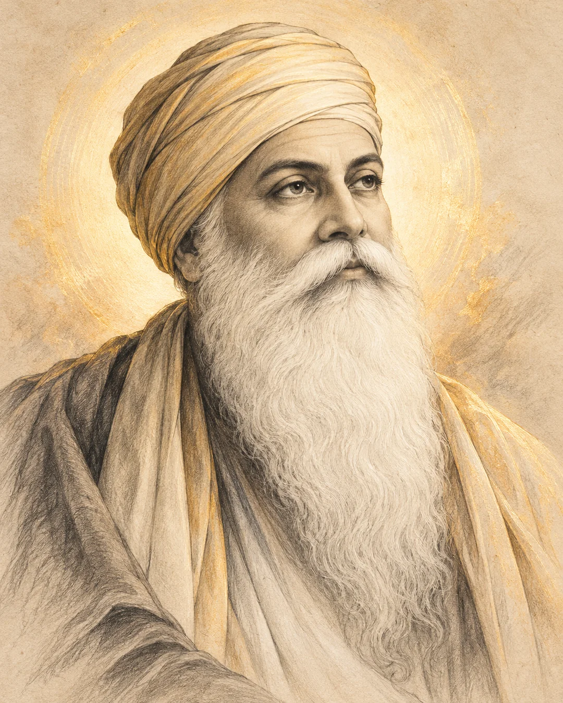
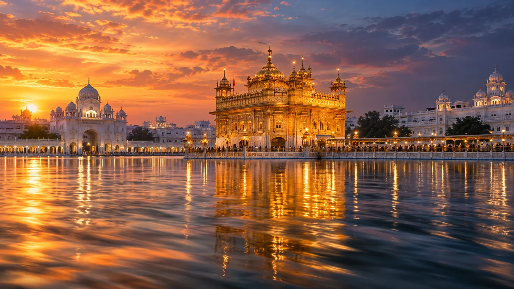
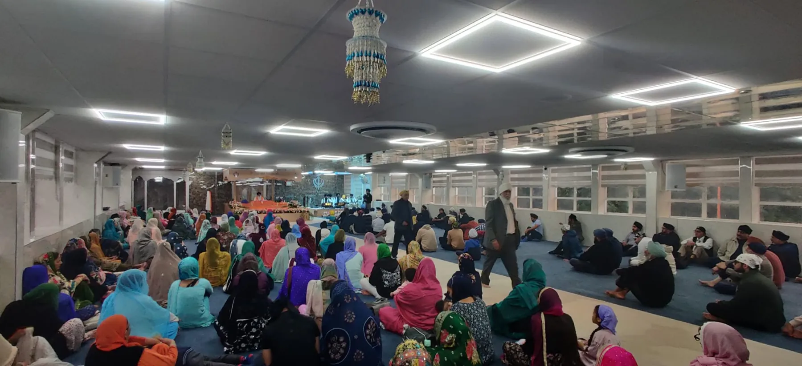

Skill & craftsmanship
Remembering the longstanding association of Ramgarhia communities with skilled trades and making.
OUR PROUD LEGACY · RAMGARHIA BOARD
Discover the people, places and principles that shaped the Ramgarhia tradition, and how the values of sangat and seva remain relevant today.
Explore the story
Artistic depiction of Guru Nanak Dev JiThe Ramgarhia name is associated with Sardar Jassa Singh Ramgarhia (1723–1803), a prominent Sikh leader of the eighteenth-century misl period. His story is linked to the Ramgarh fort near Amritsar, where Sikh communities faced a turbulent and changing political landscape.
Remembering this heritage means learning from its courage, determination and commitment to the Panth, while recognising the broader Sikh values of equality, humility and service.
Historical background ↗The early life of a leader who would become prominent during the Sikh misl period.
Ramgarhia history recounts the defence of the fort near Amritsar and its association with the Ramgarh name.
A historic complex associated with Sikh defences, built near Sri Harmandir Sahib at Amritsar.
The wider tradition continues through worship, craftsmanship, education and selfless service.
Born in 1723, Jassa Singh Ramgarhia played an important role in the Sikh misl era. Accounts remember his leadership, military expertise and involvement in the struggle to defend Sikh communities and sacred places.
His legacy is part of the wider history of the Sikh Panth. The Ramgarhia tradition takes its name from Ramgarh, rather than from a separate religious denomination.
Read a historical account ↗
The Ramgarhia Bunga is part of the historic built environment around Sri Harmandir Sahib. The bungas once served practical roles including accommodation and defence, reflecting the challenges facing Sikh communities during the eighteenth century.
The artwork shown here depicts Sri Harmandir Sahib as a whole. It is not an archival photograph of the Ramgarhia Bunga towers.
Explore the historical context ↗Heritage is not only something we remember. It is also what we choose to carry forward.
Remembering the longstanding association of Ramgarhia communities with skilled trades and making.
Serving others with humility is a Sikh principle that belongs to everyone, regardless of background.
Guru Ka Niwas honours Ramgarhia heritage while welcoming people of every community and faith.

At Guru Ka Niwas, people come together for Gurbani, sangat and seva. We welcome every visitor, and would be pleased to introduce you to the Gurdwara.
Plan your visit →About the history: This page describes the wider Ramgarhia tradition, not a verified founding history of Guru Ka Niwas itself. A local founding date, early photographs and founders' names should be added only after confirmation by the Gurdwara.
Art note: The Guru Nanak portrait, Golden Temple scenes and decorative Khanda are newly created illustrations. Photographs of Guru Ka Niwas itself are from the Gurdwara's own collection.